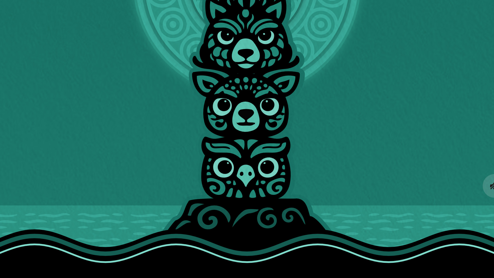
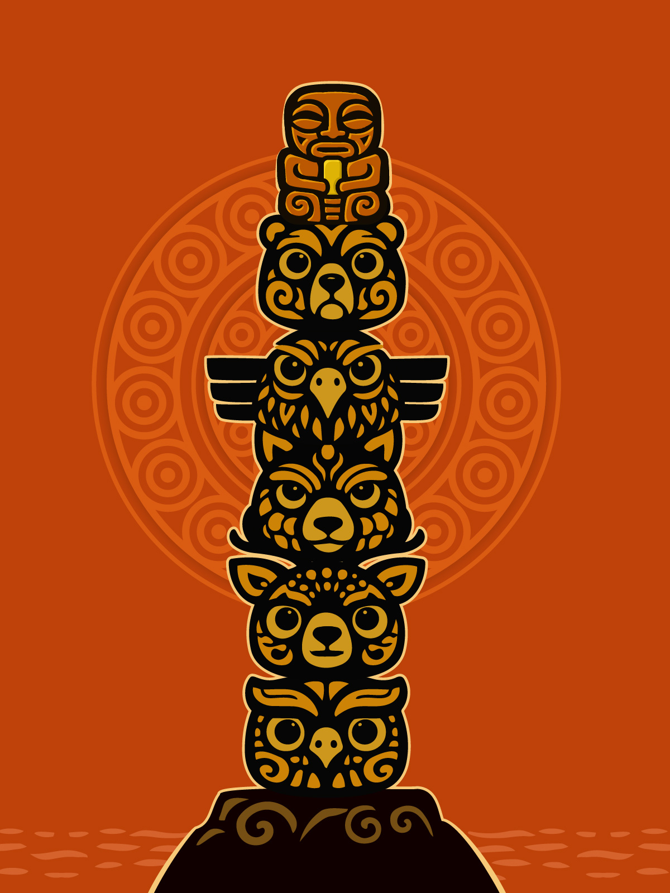
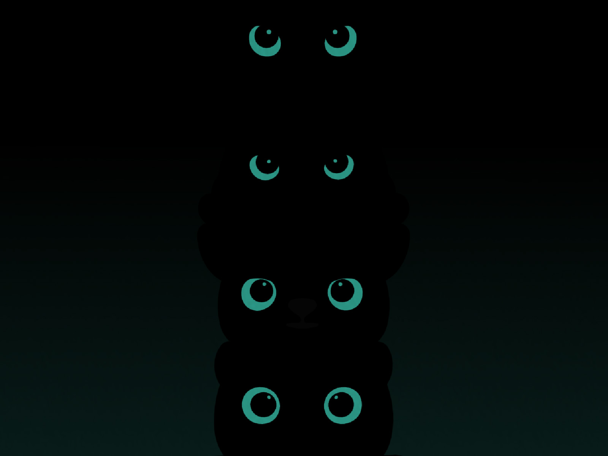

Start a session, set your phone down, and let motion detection add the friction your attention needs. The totem gives each session a small, motivating stake without turning focus into punishment.
CHAPTER 1The feed wins when there is no friction.Most focus tools rely on intention. Doomscroll Totem supports the moment before you reach for the phone.
Problem
You open your phone for one thing and end up somewhere else.
Minutes disappear in tiny swipes. Traditional timers keep running even while you drift, so they measure intent instead of behavior. Doomscroll Totem adds a clear pause before the habit loop starts.

CHAPTER 2One session. One helpful boundary.When the phone moves or you leave the app, the focus session ends.
Method
Start a session. Put the phone down. Let the app hold the boundary.
Motion detection keeps the commitment concrete. If you pick up the device or switch apps, the session ends, giving you immediate feedback without blocking your phone all day.

CHAPTER 3A small stake makes focus easier to feel.The totem adds a light gamified layer to make each session more memorable.
Motivation
Not just a timer. A small ritual that makes the choice visible.
The totem gives your focus session a gentle sense of consequence. Complete sessions, build momentum, and use the collectible layer as motivation rather than pressure.
CHAPTER 4Firm, but forgiving.Warnings and grace windows prevent accidental interruptions from feeling unfair.
Flexibility
Designed to interrupt doomscrolling, not punish small mistakes.
Warnings and a short grace window help with accidental bumps. Low Power Mode gives you a softer way to build the habit when you want less intensity.
CHAPTER 5People feel the difference in one session.The reflex break is noticeable after a single focused session.
Social proof
"It is the first focus app that changed my hand reflex."
"I planned one session and did three." "Warning plus grace keeps it firm without being punishing." The useful part is simple: one visible boundary before the feed opens.

STOP DOOMSCROLLING
A focus timer with helpful friction, not just another reminder.
Why normal focus timers are easy to ignore
Most Pomodoro timers keep counting while you check social media, answer a notification, or drift into a feed. Doomscroll Totem is built for the specific moment when your hand reaches for the phone without thinking.
How motion detection changes the habit loop
The app turns stillness into the helpful boundary. Start a focus session, put the phone down, and keep it there. If the device moves or you leave the app, the session ends, making the doomscroll reflex visible before it takes over.
For screen time, social media, and phone addiction breaks
Doomscroll Totem is not a medical product or a blocker. It is a small behavioral tool with a gamified side for people who want more friction before opening TikTok, Instagram, X, Reddit, YouTube Shorts, or any feed that keeps pulling them back.